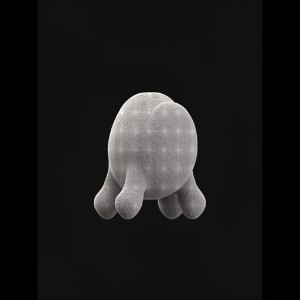

target-one
1 reference · reference-cardinality · gpu-greenroom/mflux_flux2_edit_promptfile
exact prompt Every supplied reference image shows the same authored organism; repeated images are deliberate controls. The supplied reference image is the authoritative target view. Preserve the authoritative target camera, outer silhouette, body proportions, support placement, and major mass distribution. Complete one healthy, aesthetically pleasing living quadruped with coherent anatomical transitions, surface structure, material, and gentle character within the authoritative target-view outline.

target-double
2 references · reference-cardinality · gpu-greenroom/mflux_flux2_edit_promptfile_2ref
exact prompt Every supplied reference image shows the same authored organism; repeated images are deliberate controls. All supplied reference images repeat the authoritative target view. Preserve the authoritative target camera, outer silhouette, body proportions, support placement, and major mass distribution. Complete one healthy, aesthetically pleasing living quadruped with coherent anatomical transitions, surface structure, material, and gentle character within the authoritative target-view outline.
target-side
2 references · two-reference-order · gpu-greenroom/mflux_flux2_edit_promptfile_2ref
exact prompt Every supplied reference image shows the same authored organism; repeated images are deliberate controls. Reference image 1 is the authoritative target view. Use reference 2 only to resolve occluded structure belonging to that same organism. Preserve the authoritative target camera, outer silhouette, body proportions, support placement, and major mass distribution. Complete one healthy, aesthetically pleasing living quadruped with coherent anatomical transitions, surface structure, material, and gentle character within the authoritative target-view outline.

side-target
2 references · two-reference-order · gpu-greenroom/mflux_flux2_edit_promptfile_2ref
exact prompt Every supplied reference image shows the same authored organism; repeated images are deliberate controls. Reference image 2 is the authoritative target view. Use reference 1 only to resolve occluded structure belonging to that same organism. Preserve the authoritative target camera, outer silhouette, body proportions, support placement, and major mass distribution. Complete one healthy, aesthetically pleasing living quadruped with coherent anatomical transitions, surface structure, material, and gentle character within the authoritative target-view outline.
target-triple-control
3 references · reference-cardinality · gpu-greenroom/mflux_flux2_edit_promptfile_3ref
exact prompt Every supplied reference image shows the same authored organism; repeated images are deliberate controls. All supplied reference images repeat the authoritative target view. Preserve the authoritative target camera, outer silhouette, body proportions, support placement, and major mass distribution. Complete one healthy, aesthetically pleasing living quadruped with coherent anatomical transitions, surface structure, material, and gentle character within the authoritative target-view outline.
